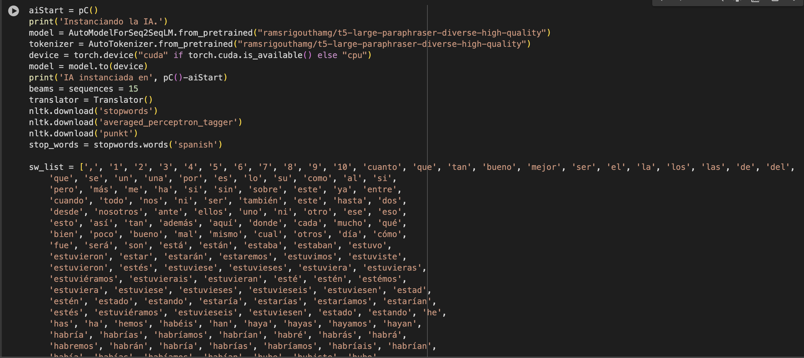
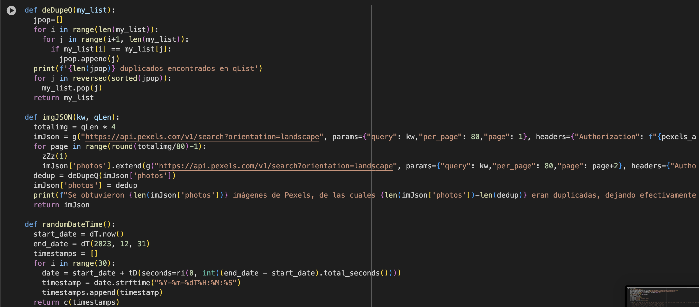
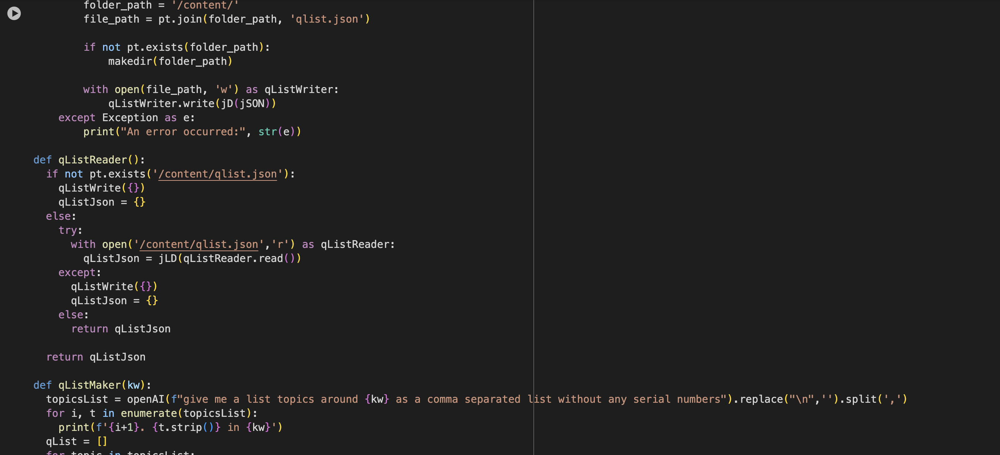
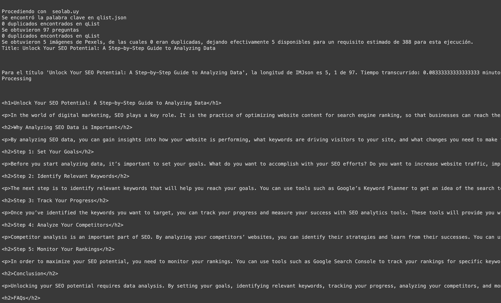
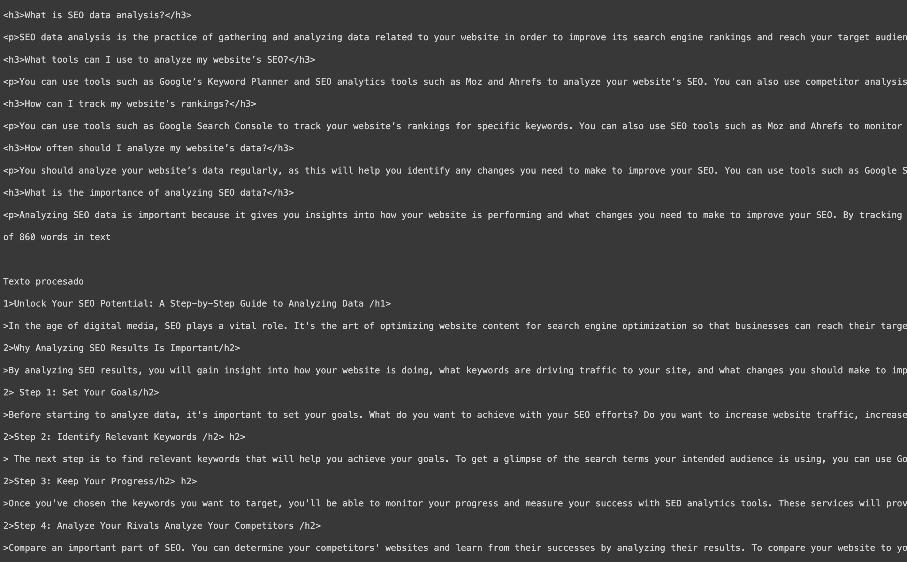
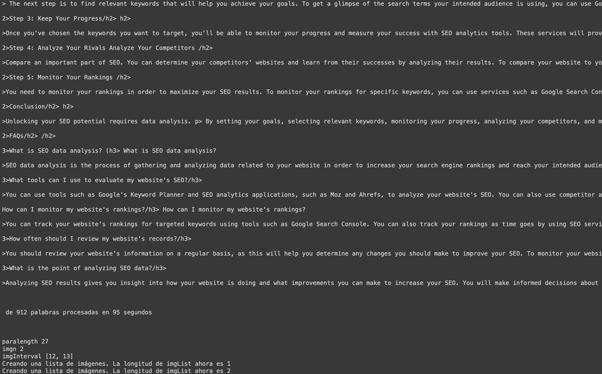

Hola, me llamo Tomás Silva Pastorini
Soy desarrollador fullstack


Algoritmo de Python + inteligencia artificial para entradas de blog de WordPress, enero de 2023
Este algoritmo de Python + inteligencia artificial fue creado para generar entradas en un blog de WordPress, y es capaz de producir miles de entradas y programarlas para fechas aleatorias. Cada entrada de WordPress se crea junto con imágenes multimedia.
Este algoritmo fue desarrollado para automatizar la creación y publicación de contenido en blogs de WordPress. Utiliza diversas APIs y bibliotecas para generar contenido de alta calidad, incluidos texto y multimedia, a partir de palabras clave específicas. A continuación se presenta un resumen de las principales funciones y procesos involucrados.
Funcionamiento:El algoritmo comienza configurando y accediendo a Google Sheets para obtener las credenciales y los datos necesarios. Esto implica establecer una conexión segura con la hoja de cálculo de Google para leer una lista de palabras clave y las credenciales de acceso a WordPress. Este acceso inicial es fundamental para asegurar que el algoritmo cuente con la información correcta para operar de manera eficiente.
Una vez conectado a Google Sheets, el algoritmo extrae las credenciales y demás parámetros necesarios de la hoja de cálculo y los almacena en una lista de diccionarios para su uso posterior. Esto le permite acceder de forma rápida y ordenada a la información esencial durante su ejecución.
Para la generación de contenido, el algoritmo instancia un modelo de inteligencia artificial preentrenado, especializado en generación y paráfrasis de texto. Este modelo se utiliza para crear contenido a partir de las palabras clave proporcionadas, asegurando que el texto generado sea relevante y coherente con los temas especificados.
El algoritmo incluye una función para eliminar duplicados en las listas de preguntas generadas. Esta función garantiza que cada pregunta sea única, evitando redundancias y mejorando la calidad del contenido generado.
Para enriquecer visualmente el contenido, el algoritmo utiliza la API de Pexels para buscar y descargar imágenes relacionadas con las palabras clave. Estas imágenes se agregan al contenido del blog para hacerlo más atractivo y visualmente agradable para los lectores.
El algoritmo también crea una lista de fechas y horas aleatorias para programar la publicación de los artículos en WordPress. Esto asegura una distribución uniforme y aleatoria de las publicaciones en el tiempo, manteniendo el blog constantemente actualizado.
La generación detallada de contenido se realiza mediante la API de OpenAI, que crea texto sobre temas específicos. Este contenido se procesa y reformula para que suene más natural y fluido, mejorando la legibilidad y el atractivo del texto.
Una vez generado y procesado el contenido, se agregan imágenes relevantes al texto. Esto se hace con las imágenes descargadas previamente de Pexels, integrándolas de manera coherente en el contenido del blog.
Además, el algoritmo genera una lista de preguntas a partir de las palabras clave y las almacena en un archivo JSON para su uso futuro. Posteriormente, lee las preguntas de ese archivo JSON para asegurar que todas las preguntas relevantes se consideren durante la generación de contenido.
El algoritmo recorre las palabras clave y genera y publica contenido para cada una. Utiliza las credenciales y configuraciones proporcionadas para publicar automáticamente el contenido generado en blogs de WordPress, programando las entradas en fechas y horas aleatorias. Esto garantiza una publicación continua sin intervención manual, manteniendo el blog siempre actualizado y relevante.



Ejemplo de una entrada de blog generada:


